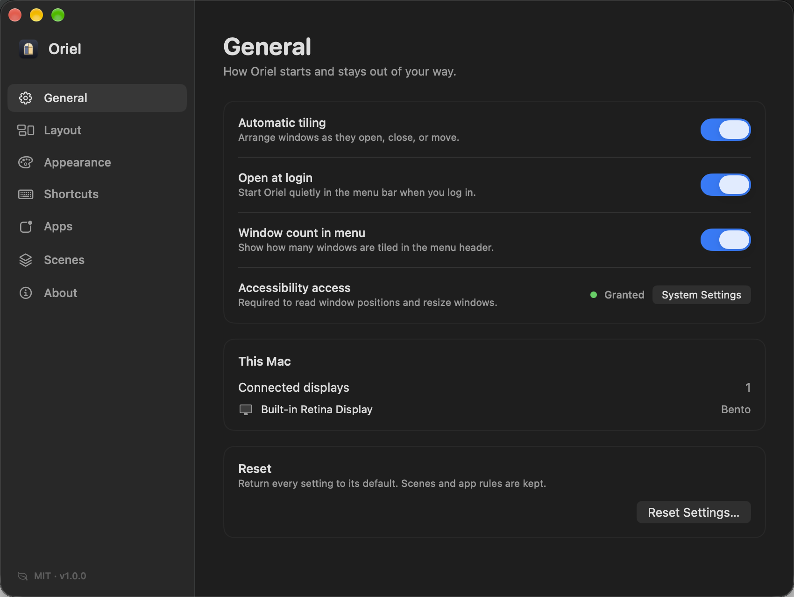

THIS WEEK
Open source · macOS 14+
A calmer desktop for macOS.
Oriel gives every window a place, then quietly keeps it there. Five layouts, saved scenes, floating app rules, and a window map — without subscriptions, accounts, or fuss.
brew install --cask irfanwani/oriel/oriel
Universal binary · MIT licensed · Ad-hoc signed, no Apple Developer account required
Make room for
THURSDAY
A quieter kind
of focus.
READY, QUIETLY
- ✓ Icon and bundle
- ✓ Accessibility flow
- ✓ Layout engine tests
- ○ Homebrew cask
SLOW INPUTS
Ways of
Seeing
Bento4 windows · built-in display
5layouts, per display
0accounts or trackers
100%native AppKit + SwiftUI
MITfree and open source
Everything in its place
Small features.
A noticeably quieter day.
Oriel is designed around the moments when a desktop gets messy: a new window opens, a call starts, a project changes.
▦
Automatic tiling
Windows find a tile as they open. Close one and the rest fill the space. No dragging, no saved canvas to maintain.
◫
A real Bento layout
An editorial arrangement with one hero window and supporting panes. Five layouts in total, each with its own personality.
▤
Scenes
Save apps, window order, floating membership and per-display layouts. Bring the whole arrangement back in one click.
⌘
Keyboard first
Swap, resize, focus, cycle stacks, change layouts and restore scenes from quiet global shortcuts.
◎
Overview & Focus
See every window as a map, or expand the one that matters and put the room back exactly as it was.
◐
Made for sharing
No Peek dims everything but the active window. Clean Space leaves a plain backdrop for calls and screenshots.
Own the arrangement
Your desktop,
remembered.
App rules keep utility windows floating. Scenes remember the rest. Every display can have a different layout, capacity and main-window size.
- Floating apps and exclusion lists
- Scene restore launches closed apps
- Per-display overrides that actually stick
- Stacked overflow or gentle floating overflow

oriel — zsh
$ oriel layout bento
Bento · 4 windows on Built-in Display
$ oriel scene "Deep work"
Scene restored · 3 windows
$ oriel clean-space
A plain backdrop for sharing
$ oriel overview
Every window, mappedAlso available as
oriel:// URLs for Shortcuts, Raycast and scripts.Private by construction
A desktop tool
that stays local.
No telemetry. No account. No network calls. Oriel asks for Accessibility because macOS requires it to move windows — and uses it for geometry and nothing else.
- Never reads what is inside your windows
- No Screen Recording or Input Monitoring
- No keyboard event tap
- Settings and scenes stay on your Mac
One command
Install Oriel.
Homebrew installs the app in Applications and puts the oriel command on your path. macOS 14 Sonoma or later.
brew install --cask
irfanwani/oriel/oriel
- 1 Install with Homebrew, or download the DMG.
- 2 Open Oriel and grant Accessibility.
- 3 Pick a layout. Start working.
Oriel is ad-hoc signed. Gatekeeper may ask for approval on first launch, and updates may require re-granting Accessibility. Troubleshooting →
A calmer desktop